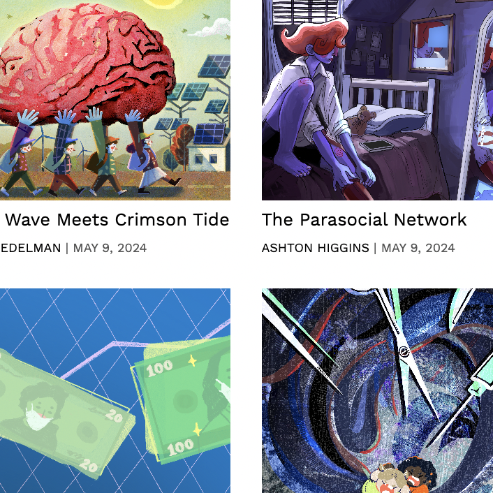
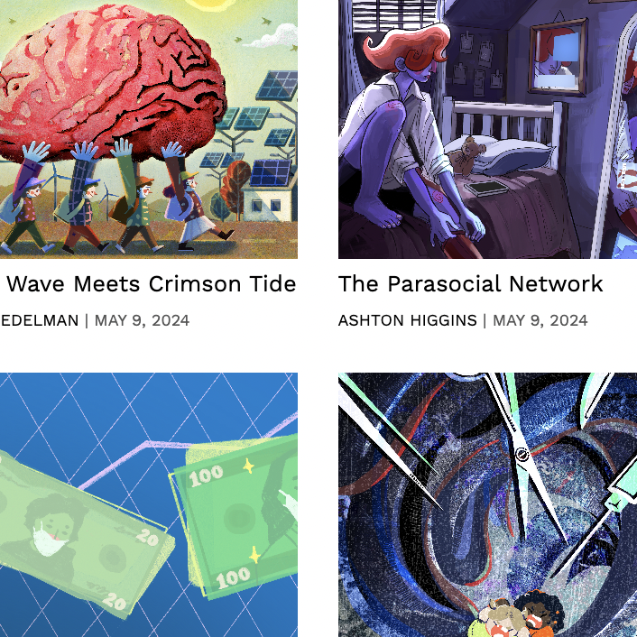
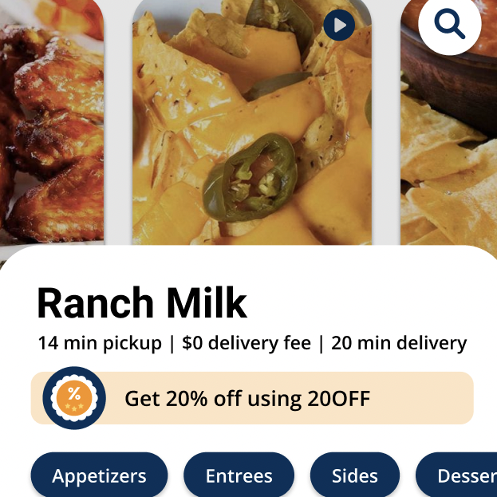
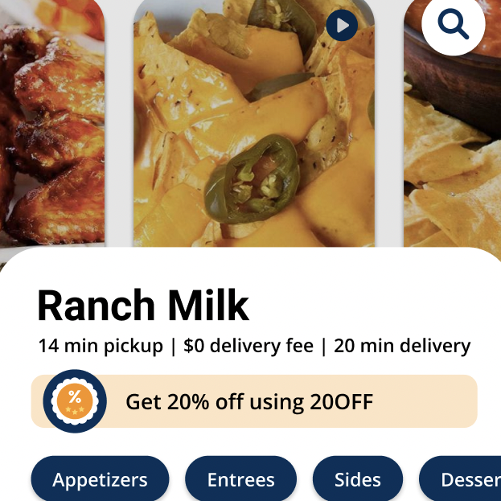
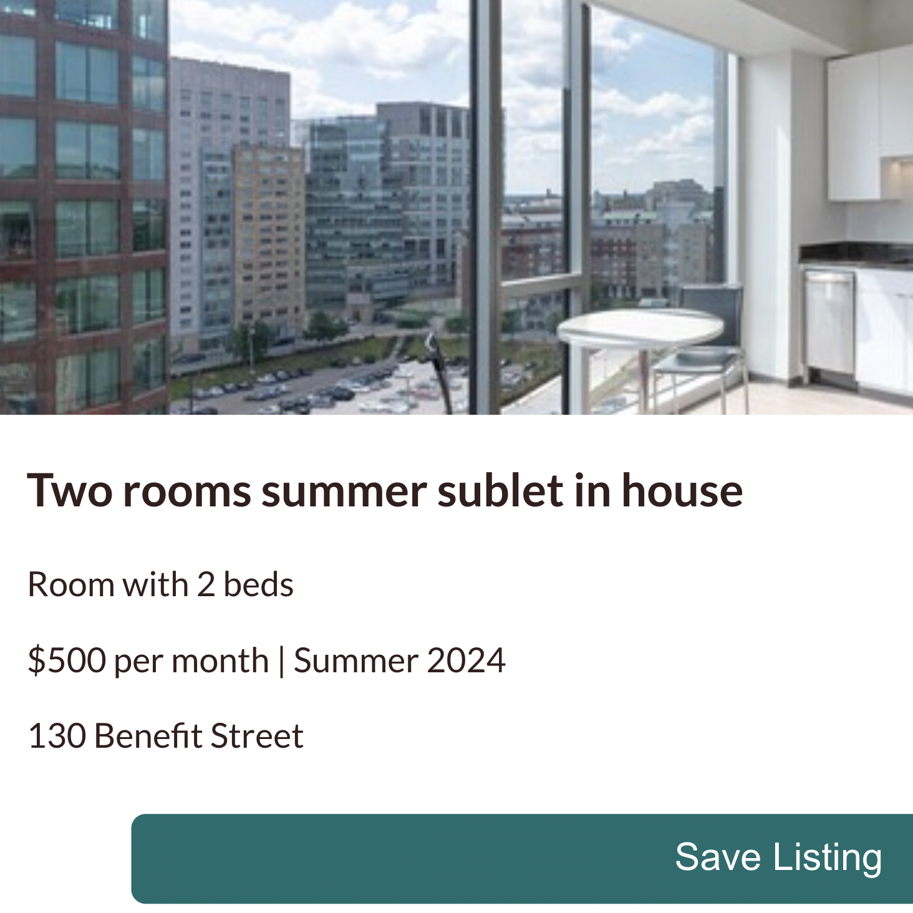
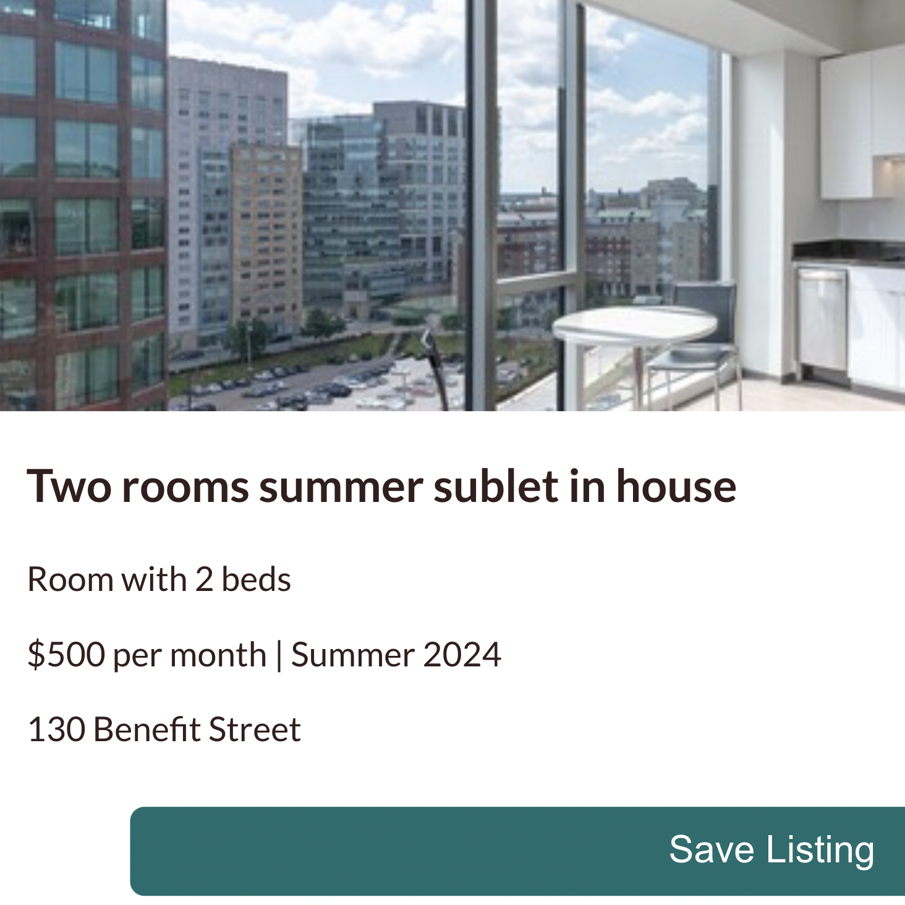

MY PROJECTS
 
Brown Political Review: Web Design & Development
The revamping, design, and front-end development of Brown Political Review’s online publication site.

 

MiFonda Storefront: Web Design
The creation of a visual-forward & unique food ordering experience for a delivery service startup.

 

Brown Sublets: Front-end Development
The front-end development of a site designed to connect Brown students looking to sublet or lease.